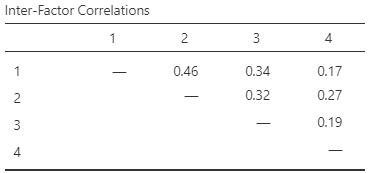

8 Exploratory Factor Analysis
When we have finished this chapter, we should be able to:
8.1 Introduction
As we discussed in the previous chapter, Principal Component Analysis (PCA) is primarily used to reduce the dimensionality of the dataset while retaining as much of its total variance as possible. In this chapter, Exploratory Factor Analysis (EFA) focuses on identifying unobserved latent variables (also known as common factors) that explain the correlations among observed variables, with the aim of uncovering the data’s underlying structure.
Observed variables (also called manifest variables) are the variables that we can directly measure or observe.
Latent variables are hidden or abstract concepts inferred from manifest variables.
Exploratory Factor Analysis
Exploratory Factor Analysis (EFA) can be used to explore the dimensionality of a measurement instrument by identifying the smallest number of interpretable factors that explain the common variance among variables.
Let’s say we have \(p\) observed variables, denoted as \(X_1, X_2, ..., X_p\). The factor model for the \(i\)-th observed variable (\(X_i\)) for a single individual can be expressed as a regression on the common factors:
\[X_i = l_{i1}F_1 + l_{i2}F_2 + ...+ l_{ij}F_j +... + l_{ik}F_k + u_i\]
Where:
- \(X_i\) is the \(i\)-th observed variable (often standardized to have a mean of 0 and a standard deviation of 1).
- \(F_j\) is the \(j\)-th common factor (\(j = 1, 2, ..., k\)), which are the latent constructs we’re trying to uncover.
- \(l_{ij}\) is the factor loading of the \(i\)-th observed variable on the \(j\)-th common factor. It represents the strength and direction of the association between the observed variable and the factor.
- \(k\) is the number of common factors (where \(k < p\)). This is a key parameter to determine in EFA.
- \(u_i\) is the unique factor associated with the observed variable \(X_i\). It represents the portion of the variance in \(X_i\) that cannot be explained by the common factors and is considered the specific variance of \(X_i\), unique to it and not shared with the other variables. The \(u_i\) terms are assumed to be uncorrelated with each other and with the common factors, and have a mean of 0.
8.2 Steps in the process of EFA
Prepare the Data: Standardize the data. In practice, Likert scale data are typically not standardized, as the scale is generally considered consistent across items. (b) Address outliers in the data. Note that outliers in Likert data are often extreme values, such as respondents who consistently select the “0 = not at all stressful” or “5 = extremely stressful” option. (c) Additionally, it is important to reverse-score negatively worded items to ensure that all items are scaled in the same direction (though this step is not applicable in our example).
Evaluate Assumptions: Assess the suitability of the data for EFA using diagnostic tests such as the Kaiser-Meyer-Olkin (KMO) measure of sampling adequacy and Bartlett’s test of sphericity. Additionally, examine the correlation matrix to ensure that variables are sufficiently correlated for factor analysis but without multicollinearity (extremely high correlations) or singularity (perfect correlations of 1 or -1). These tests determine whether the correlation matrix is appropriate for factor extraction.
Choose the Extraction Method: Select an extraction method for factors (e.g., Principal Axis Factoring, Maximum Likelihood, or Maximum Residuals). Principal Axis Factoring is commonly used when we assume that underlying latent factors are driving correlations.
Determine the Number of Factors: Identify how many factors to extract, guided by criteria such as eigenvalues greater than one, scree plot inspection, or parallel analysis. These factors often correspond to underlying subscales.
Factor Rotation: Apply a rotation method to simplify the factor structure. Orthogonal rotation (e.g., Varimax) assumes factors are uncorrelated. Oblique rotation (e.g., Oblimin, Promax) assumes factors are correlated.
Interpret the Factors: Examine the factor loadings to interpret each factor. Look for variables that load highly on each factor and assign meaningful labels to the factors.
Assess Factor Reliability: Use Cronbach’s Alpha to assess the internal consistency or reliability of the factors. A value above 0.7 indicates good reliability.
Refine the Model: Based on the results, you may choose to drop items with low factor loadings or revise the number of factors. Ensure that any issues of singularity are addressed by removing highly correlated variables.
Finalize the Factor Solution: Once the factors are interpretable and reliable, finalize the model and prepare the results for reporting.
8.3 Example of GRMS Stress Appraisal
EXAMPLE DATA
We will use the same data from the study by Lewis and Neville (Lewis and Neville 2015) on the Gendered Racial Microaggressions Scale for Black Women.
- Unattractive because of size of butt (Obj1)
- Negative comments about size of facial features (Obj2)
- Imitated the way they think Black women speak (Obj3)
- Someone made me feel unattractive (Obj4)
- Negative comment about skin tone (Obj5)
- Someone assumed I speak a certain way (Obj6)
- Objectified me based on physical features(Obj7)
- Someone assumed I have a certain body type (Obj8)
- Made a sexually inappropriate comment (Obj9)
- Negative comments about my hair when natural (Obj10)
- I have felt unheard (Marg1)
- My comments have been ignored (Marg2)
- Someone challenged my authority (Marg3)
- I have been disrespected in workplace (Marg4)
- Someone has tried to “put me in my place” (Marg5)
- Felt excluded from networking opportunities (Marg6)
- Assumed I did not have much to contribute to the conversation (Marg7)
- Someone assumed I was sassy and straightforward (Str1)
- I have been told that I am too independent (Str2)
- Someone made me feel exotic as a Black woman (Str3)
- I have been told that I am too assertive (Str4)
- Assumed to be a strong Black woman (Str5)
- Someone has told me to calm down (Ang1)
- Perceived to be “angry Black woman” (Ang2)
- Someone accused me of being angry when speaking calm (Ang3)
8.4 EFA in Jamovi
On the Jamovi top menu navigate to
flowchart LR A(Analyses) -.-> B(Factor) -.-> C(Exploratory Factor Analysis)
as shown below (Figure 8.2).
The Exploratory Factor Analysis box opens. From the left-hand pane drag all the variables into the Variables field on the right-hand side, as shown below (Figure 8.3):
All variables in the dataset are on the same scale (Likert scale).
8.4.1 Assumptions
The assumption checks for EFA are similar to those in PCA (Bartlett’s test of sphericity, Kaiser-Meyer-Olkin (MKO) index of Sampling Adequacy; see Chapter 7). However, in Exploratory Factor Analysis, we are also particularly concerned with issues of multicollinearity and singularity in the data, as these can affect the reliability and interpretability of the factor model.
One way to assess this is by examining the determinant of the correlation matrix. If the determinant is smaller than 0.00001, this may indicate that some variables are too highly correlated (multicollinearity), or some variables are perfectly correlated (singularity), which can distort factor extraction.
NOTE: The simplest case of a 2 × 2 correlation matrix, for example, with Obj1 and Obj2 variables, consists of two rows and two columns and is written as:
\[C = \begin{bmatrix} r_{11} & r_{12} \\ r_{21} & r_{22} \\ \end{bmatrix} = \begin{bmatrix} 1 & 0.35 \\ 0.35 & 1 \\ \end{bmatrix} \]
Here, \(r_{11}\) and \(r_{22}\) represent the correlation of each variable with itself (which is always 1), and \(r_{12}\) and \(r_{21}\) represent the correlation between Obj1 and Obj2 (which is 0.35 in this example).
The determinant of C is calculated as: \(\text{det}(C) = r_{11} \cdot r_{22} - r_{12} \cdot r_{21} = 1 \cdot 1 - 0.35 \cdot 0.35 = 1-0.123 = 0.877\).
In our example, the determinant of the correlation matrix (a 25 x 25 matrix with Pearson’s correlations) can be calculated using a simple line of code in the Rj Editor+ of Jamovi:
[1] 0.0075With a value of 0.0075, the determinant is comfortably above the 0.00001 threshold, indicating that our data is appropriate for factor analysis.
If the determinant were below the threshold, we would need to identify and address problematic variables—those that are either overly correlated or not correlated sufficiently with others—and then re-run the diagnostic checks.
8.4.2 Specify the Number of Factors
When researchers lack a clear theoretical framework to guide their analysis, they often adopt an iterative approach, exploring multiple solutions by extracting varying numbers of factors. For example, Lewis and Neville (2015) examined models with two, three, four, and five factors. In this example, we will present a four-factor solution as the selected model:
Therefore, we select “Fixed number” and type 4 in the number of factors:
We can also obtain the scree plot from the Additional Output:
8.4.3 Extraction of factors and rotation
Lewis and Neville (2015) used parallel analysis as their extraction method. In this example, we demonstrate the use of Principal Axis Factoring (PAF) for extraction and Oblimin (the default option) as the rotation method.
Additionally, we hide loading below 0.23 (the default is 0.3):
Figure 8.10 shows the loadings of the factors after Oblimin rotation.
In the rotated factor matrix, a few items exhibit cross-loadings, meaning they load significantly on more than one factor:
Obj6 loads on both Factor 1 and Factor 4, with loadings of 0.43 and 0.25, respectively. While the item shows some association with both factors, its stronger loading on Factor 1 suggests it aligns more closely with the Objectification construct.
Marg6 also displays cross-loadings, with loadings of 0.31 on Factor 1 and 0.25 on Factor 2. Though both values are relatively low, the item may still require closer evaluation to determine its conceptual alignment.
Ang1 loads on both Factor 3 and Factor 4, with loadings of 0.33 and 0.24, respectively. Although neither loading is particularly high, this item should be reviewed in the context of theoretical expectations.
NOTE: In oblique rotation, a distinction is made between the pattern matrix and the structure matrix. The pattern matrix (Figure 8.10) displays the standardized regression coefficients (i.e., factor loadings) of each factor on each observed variable, reflecting the direct effects while controlling for the influence of other factors. In contrast, the structure matrix presents the simple correlations between each observed variable and each factor, reflecting both direct and indirect effects (due to factor intercorrelations) without controlling for the overlap among factors (this matrix is not included in the Jamovi output).
Partitioning the variance in factor analysis
Factor analysis assumes that variance can be partitioned into two types of variance: common and unique.
Common variance (communality), denoted usually as \(h^2\), represents the portion of a variable’s variance that is shared with other variables and is explained by the underlying common factors (NOTE: A critical difference between PCA and EFA is that factor analysis only attempts to account for common variance, not total variance).
Unique variance (uniqueness), denoted usually as \(u^2\), represents the portion of variance that is specific to the variable itself and not explained by the common factors. The greater “uniqueness” the lower the relevance of the variable in the factor model. For example, if a variable has high uniqueness (close to 1), it indicates that the variable is poorly explained by the selected number of factors.
8.4.4 Explained variance and model fit
Under the Additional Output section, select Factor summary, Factor correlations, and Model fit measures:
Explained variance
Figure 8.12 presents the percentage of common variance in the variable set that is captured by the derived factors after Oblimin rotation.
Factor 1 explains 11.2% of the shared variance, Factor 2 explains an additional 8.1%, Factor 3 explains another 5.5%, and Factor 4 explains an additional 3.6%, resulting in a cumulative common variance of 28.4% explained by the first four factors.
Although explaining about 30% of the common variance may seem modest, it is not uncommon in social science research, particularly when dealing with psychological or behavioral constructs. These constructs are often complex and difficult to measure precisely, which can lead to lower levels of explained variance.
The Inter-Factor Correlation Matrix reveals that the four factors are positively correlated with each other, with correlations ranging from 0.17 to 0.46 (Figure 8.13).

Model fit
The chi-square test can be used to assess whether the model fits the data. The null hypothesis for the chi-square test is that the model fits the data perfectly. Therefore, a non-significant chi-square value (e.g., p > 0.05) indicates that the model fits the data reasonably well. However, the chi-square test is sensitive to sample size and non-normal variable distributions (Figure 8.14).
In addition to the chi-square test, the root mean square error of approximation (RMSEA) serves as an absolute fit index that takes model complexity into account by incorporating a penalty for lack of parsimony. RMSEA values less than or equal to 0.08 are typically interpreted as good model fit.
In our model: \(\chi^2(206)= 189.19\), p = 0.794, which is non-significant and suggests that the model fits the data well. Moreover, the RMSEA value is 0.00, indicating a close fit between the model and the observed data.
These results suggest that the model structure is appropriate, even if the strength of the factors is modest.
8.4.5 Path diagram
The path diagram for the four-factor, 25 items EFA, showing only the dominant loading per item (for clarity) follows:
This diagram illustrates how the observed variables can be grouped together, allowing us to identify the following common factors (latent variables). These factors can also be considered as the subscales of the questionnaire:
- Factor 1: Assumptions of Beauty and Sexual Objectification (11 items; Obj1-Obj10 and Marg6)
- Factor 2: Silenced and Marginalized (6 items; Marg1-Marg5, Marg7)
- Factor 3: Strong Woman Stereotype (6 items; Str1-Str5, Ang1)
- Factor 4: Angry Woman Stereotype (2 items; Ang2 and Ang3)
It is important to note that the arrows point from the factor (oval) to the observed variables (items in squares) illustrating that the factor “explains” the item’s score. This represents a reflective model, in which the latent construct exists independently of the measures. Additionally, note that the path diagram includes links with numerical values between latent factors, representing the correlation coefficients among them.
8.4.6 Factor scores
Factor scores can be estimated for each case (row) on each latent factor (unobserved variables). These scores can be used to investigate the associations between the factors and other variables or to represent the underlying factors for subsequent analysis. For example, factor scores are often used in regression models (in place of means or sums) when predictors are highly correlated, helping to address multicollinearity.
There are several estimation methods for obtaining factor scores in EFA using Jamovi, with each method having different assumptions and advantages.
When using Oblimin rotation (which allows factors to be correlated), the best methods for estimating factor scores are ten Berge’s method and Bartlett’s method. Ten Berge’s method is generally considered the most accurate because it specifically adjusts for factor correlations using generalized least squares. Bartlett’s method is also a strong choice, producing consistent scores while accounting for factor correlations. In contrast, Anderson-Rubin’s method should be avoided because it forces factor scores to be uncorrelated, which conflicts with the purpose of Oblimin. Thurstone’s method can be used but is less optimal, and Harman’s method is not recommended because it does not properly adjust for correlated factors.
In our example, we select the ten Berge’s method (Figure 8.15).
8.5 Reliability analysis
An important step in establishing the integrity of factors derived from a factor analysis (which will ultimately be presented as subscales of the scale) is to assess their internal consistency as an initial indicator of reliability.
On the Jamovi top menu navigate to
flowchart LR A(Analyses) -.-> B(Factor) -.-> C(Reliability Analysis)
as shown below (Figure 8.17).

We have four derived factors, so we will run Cronbach’s reliability analyis four times-once for each subset of observed variables (items) grouped by the factor analysis.
From the Scale Statistics options, select Cronbach’s \(\alpha\) :
(Note that there is also a menu option for “Reverse Scaled Items” for items that need to have their scores reversed).